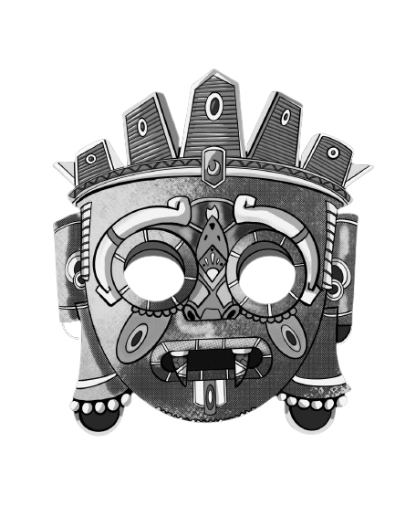

<div class="flex flex-col h-screen justify-between">
  <nav class="border-gray-200 bg-gray-50 dark:bg-zinc-800 dark:border-gray-700 py-2">
    <div class="max-w-screen-2xl flex flex-wrap items-center justify-between mx-auto">
      <a href="#" class="flex items-center justify-center space-x-3 rtl:space-x-reverse py-1.5 md:w-1/12">
        
      </a>
      <button data-collapse-toggle="navbar-dropdown" type="button"
        class="inline-flex items-center p-2 w-10 h-10 justify-center text-sm text-gray-500 rounded-lg md:hidden hover:bg-gray-100 focus:outline-none focus:ring-2 focus:ring-gray-200 dark:text-gray-400 dark:hover:bg-gray-700 dark:focus:ring-gray-600"
        aria-controls="navbar-dropdown" aria-expanded="false">
        <span class="sr-only">Open main menu</span>
        <svg class="w-5 h-5" aria-hidden="true" xmlns="http://www.w3.org/2000/svg" fill="none" viewBox="0 0 17 14">
          <path stroke="currentColor" stroke-linecap="round" stroke-linejoin="round" stroke-width="2" d="M1 1h15M1 7h15M1 13h15" />
        </svg>
      </button>
      <div class="hidden w-full md:flex md:items-center md:justify-between md:px-5 md:w-11/12" id="navbar-dropdown">
  
        <ul class="flex flex-col w-full md:w-fit font-medium p-4 md:p-2.5 mt-4 border-2 border-gray-100 rounded-lg bg-gray-50 md:space-x-8 rtl:space-x-reverse md:flex-row md:mt-0 md:bg-white dark:bg-neutral-800 md:dark:bg-transparent dark:border-gray-700">
          <li>
            <a routerLink="inicio" (click)="pedidoChk = 1"
              [ngClass]="pedidoChk !== 1 ? 'text-gray-900 rounded hover:bg-gray-100 md:hover:bg-transparent md:border-0 md:hover:text-slate-700 md:p-0 md:w-auto dark:text-white md:dark:hover:text-slate-500 dark:focus:text-white dark:border-gray-700 dark:hover:bg-gray-700 md:dark:hover:bg-transparent' : 'text-white bg-slate-700 rounded md:bg-transparent md:text-slate-700 md:p-0 md:dark:text-slate-500 dark:bg-slate-600 md:dark:bg-transparent underline decoration-slate-500'"
              class="block py-2 px-3" aria-current="page">Home</a>
          </li>
          <li>
            <a routerLink="crud" (click)="pedidoChk = 2" class="block py-2 px-3"
              [ngClass]="pedidoChk !== 2 ? 'text-gray-900 rounded hover:bg-gray-100 md:hover:bg-transparent md:border-0 md:hover:text-slate-700 md:p-0 md:w-auto dark:text-white md:dark:hover:text-slate-500 dark:focus:text-white dark:border-gray-700 dark:hover:bg-gray-700 md:dark:hover:bg-transparent' : 'text-white bg-slate-700 rounded md:bg-transparent md:text-slate-700 md:p-0 md:dark:text-slate-500 dark:bg-slate-600 md:dark:bg-transparent underline decoration-slate-500'">
              CRUD
            </a>
          </li>
          <li>
            <a routerLink="menu" (click)="pedidoChk = 3"
              [ngClass]="pedidoChk !== 3 ? 'text-gray-900 rounded hover:bg-gray-100 md:hover:bg-transparent md:border-0 md:hover:text-slate-700 md:p-0 md:w-auto dark:text-white md:dark:hover:text-slate-500 dark:focus:text-white dark:border-gray-700 dark:hover:bg-gray-700 md:dark:hover:bg-transparent' : 'text-white bg-slate-700 rounded md:bg-transparent md:text-slate-700 md:p-0 md:dark:text-slate-500 dark:bg-slate-600 md:dark:bg-transparent underline decoration-slate-500'"
              class="block py-2 px-3" aria-current="page">Menú</a>
          </li>
          <li>
            <button id="dropdownNavbarLink" (click)="pedidoChk = 4" #pedidos
              data-dropdown-toggle="dropdownNavbar"
              [ngClass]="pedidoChk !== 4 ? 'text-gray-900 rounded hover:bg-gray-100 md:hover:bg-transparent md:border-0 md:hover:text-slate-700 md:p-0 md:w-auto dark:text-white md:dark:hover:text-slate-500 dark:focus:text-white dark:border-gray-700 dark:hover:bg-gray-700 md:dark:hover:bg-transparent' : 'text-white bg-slate-700 rounded md:bg-transparent md:text-slate-700 md:p-0 md:dark:text-slate-500 dark:bg-slate-600 md:dark:bg-transparent underline decoration-slate-500'"
              class="flex items-center justify-between w-full py-2 px-3 ">
              Pedidos {{(pedidoChk === 4  && tipoPedido == 'cocina') ? '- Cocina' :
              (pedidoChk === 4 && tipoPedido == 'barra') ? '- Barra' : ''}} <svg
                class="w-2.5 h-2.5 ms-2.5" aria-hidden="true"
                xmlns="http://www.w3.org/2000/svg" fill="none"
                viewBox="0 0 10 6"><path stroke="currentColor"
                  stroke-linecap="round" stroke-linejoin="round" stroke-width="2"
                  d="m1 1 4 4 4-4" /></svg>
            </button>
            <!-- Dropdown menu -->
            <div id="dropdownNavbar"
              class="z-10 hidden font-normal bg-white divide-y divide-gray-100 rounded-lg shadow w-44 dark:bg-gray-700 dark:divide-gray-600">
              <ul class="py-2 text-sm text-gray-700 dark:text-gray-400"
                aria-labelledby="dropdownLargeButton">
                <li>
                  <a routerLink="cocina" (click)="toggleType(true)"
                    class="block px-4 py-2 hover:bg-gray-100 dark:hover:bg-gray-600 dark:hover:text-white"
                    id="cocina">Cocina</a>
                </li>
                <li>
                  <a routerLink="barra" (click)="toggleType(false)"
                    class="block px-4 py-2 hover:bg-gray-100 dark:hover:bg-gray-600 dark:hover:text-white"
                    id="barra">Barra</a>
                </li>
              </ul>
            </div>
          </li>
        </ul>
        <!-- Icono de inicio de sesión -->
        <form class="w-full pt-5 md:pt-0 md:w-fit">
          <!-- <button type="button" class="w-full md:w-fit text-green-700 hover:text-white border border-green-700 hover:bg-green-800 focus:ring-4 focus:outline-none focus:ring-green-300 font-medium rounded-lg text-sm px-5 py-2.5 text-center dark:border-green-500 dark:text-green-500 dark:hover:text-white dark:hover:bg-green-600 dark:focus:ring-green-800" type="submit"><i class="fa-solid fa-user-large"> Iniciar Sesión</i></button> -->
          <button type="button" class="loginBtn focus:outline-none text-white bg-green-700 hover:bg-green-800 focus:ring-4 focus:ring-green-300 font-medium rounded-lg text-sm px-5 py-2.5 me-2 mb-2 dark:bg-green-600 dark:hover:bg-green-700 dark:focus:ring-green-800"><i class="fa-solid fa-user-large"></i> Iniciar Sesión</button>
        </form>
      </div>
    </div>
  </nav>
  
  <router-outlet></router-outlet>
  
  <!-- pie de pagina -->
  <footer class="text-center text-white bg-opacity-90 bg-neutral-900">
    <div class="py-6">
      <div class="grid grid-cols-1 md:grid-cols-4 gap-4">
        
        <div class="px-10 mb-6">
          <div class="flex items-center justify-center mb-6 mx-auto" style="width: 150px; height: 150px;">
            </div>
          <p class="text-center mb-4">"Donde cada plato es un tributo a nuestra herencia, una oda a la tradición, y un viaje a través de México"</p>
          <ul class="list-unstyled flex flex-row justify-center">
            <li><a class="text-white px-2" href="#!"> <i class="fab fa-facebook-square"></i></a></li>
            <li><a class="text-white px-2" href="#!"><i class="fab fa-instagram"></i></a></li>
            <li><a class="text-white ps-2" href="#!"><i class="fab fa-youtube"></i></a></li>
          </ul>
        </div>
  
  
        <div class="px-10 mb-6">
          <h5 class="mb-6 text-xl">Platillos destacados</h5>
          <ul class="list-unstyled mb-4">
            <li class="mb-2"><a routerLink="menu" class="text-light"><i class="fa-solid fa-utensils"></i>  Sopa Azteca</a></li>
            <li class="mb-2"><a routerLink="menu" class="text-light"><i class="fa-solid fa-utensils"></i>  Chiles en nogada</a></li>
            <li class="mb-2"><a hrouterLink="menu" class="text-light"><i class="fa-solid fa-utensils"></i>  Pozole</a></li>
            <li class="mb-2"><a routerLink="menu" class="text-light"><i class="fa-solid fa-utensils"></i>  Mole</a></li>
            <li class="mb-2"><a routerLink="menu" class="text-light"><i class="fa-solid fa-utensils"></i>  Chapulines en salsa verde</a></li>
            <li class="mb-2"><a routerLink="menu" class="text-light"><i class="fa-solid fa-utensils"></i>  Mixiotes</a></li>
            <li class="mb-2"><a routerLink="menu" class="text-light"><i class="fa-solid fa-utensils"></i>  Aguacate relleno</a></li>
          </ul>
        </div>
  
        <div class="px-10 mb-6">
          <h5 class="mb-6 text-xl">Sobre Nosotros</h5>
          <ul class="list-unstyled">
            <li class="mb-2"><a routerLink="inicio" fragment="mision" class="text-light"><i class="fa-solid fa-user-group"></i>  Mision</a></li>
            <li class="mb-2"><a routerLink="inicio" fragment="vision" class="text-light"><i class="fa-solid fa-user-group"></i>  Vision</a></li>
            <li class="mb-2"><a routerLink="inicio" fragment="galeriafotos" class="text-light"><i class="fa-solid fa-user-group"></i>  Galería de fotos</a></li>
            <li class="mb-2"><a routerLink="inicio" fragment="descripcion" class="text-light"><i class="fa-solid fa-user-group"></i>  Descripcion</a></li>
            <li class="mb-2"><a routerLink="inicio" fragment="origenes" class="text-light"><i class="fa-solid fa-user-group"></i>  Origenes</a></li>
            <li class="mb-2"><a routerLink="inicio" fragment="calificaciones" class="text-light"><i class="fa-solid fa-user-group"></i>  Calificaciones</a></li>
          </ul>
        </div>
  
        <div class="px-10 mb-6">
          <h5 class="mb-6 text-xl">Contacto</h5>
            <ul class="list-unstyled"> 
              <li><p class="pb-2"><i class="fas fa-map-marker-alt pe-2"></i>Benito Juárez #456, Libertad, México</p></li>
              <li><p class="pb-2"><i class="fas fa-phone pe-2"></i>+52 923 456 7890</p></li>
              <li><p class="pb-2"><i class="fas fa-envelope pe-2 mb-0"></i>temploazteca&#64;gmail.com</p></li>
          </ul>
        </div>
      </div>
    </div>
  
  
    <div class="text-center p-4" style="background-color: rgba(0, 0, 0, 0.2)">
      © 2020 Copyright:
      <a class="text-white" href="https://mdbootstrap.com/">MDBootstrap.com</a>
    </div>
  </footer>
  <!-- termina pie de pagina -->
</div>

<div class="bg"></div>
<div class="bg bg2"></div>
<div class="bg bg3"></div>